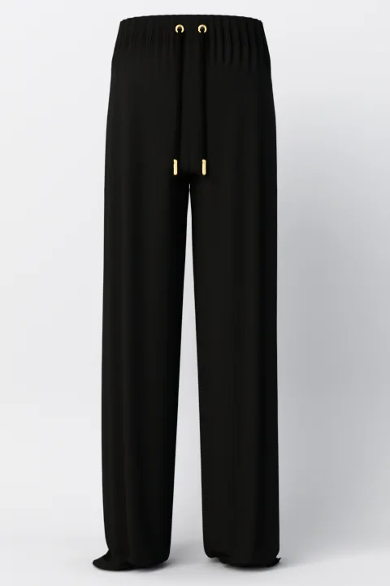

Chapter I · Knitwear
Carbonado
Trousers

STAND-IN · img/carbonado-trousers/front/master.* (departments/apparel/new-pieces-2026-11/build/quiet-black-trousers/site/quiet_black_trousers_front_16k.png; 16K, 8640 × 15360)front
three quarter
back
Chapter I
Carbonado
Trousers
The quiet that follows the hoodie down. A relaxed straight leg in the house knit, its dots rising from the hem and fading at the knee, the waist tied with a black cord tipped in brass.
- KNIT
- 28-GAUGE DOUBLE JACQUARD
- YARN
- MATTE AND MERCERISED BLACK COTTON
- LEG
- RELAXED, STRAIGHT
- COLOURWAY
- BLACK / BLACK
- SIZE
- XS · S · M · L · XL
USD 325
Made to order.
Keep a seatThe register sees the pre-sale first.
Details
- Pre-sale
- Made to order. We email your delivery date once production is confirmed. Cancel for a full refund any time before production starts.
- Returns
- Size exchanges within 14 days of delivery, unworn and with tags.
- Care
- Wash cold, inside out, on a gentle cycle. Dry flat. No tumble dryer, no bleach. Care
- Size
- The measurements
Close, at 100%
The fade at the knee
The waistband
In its world
Carbonado
KNIT28-GAUGE DOUBLE JACQUARDYARNMATTE AND MERCERISED BLACK COTTONLEGRELAXED, STRAIGHTCOLOURWAYBLACK / BLACKIn the same scene